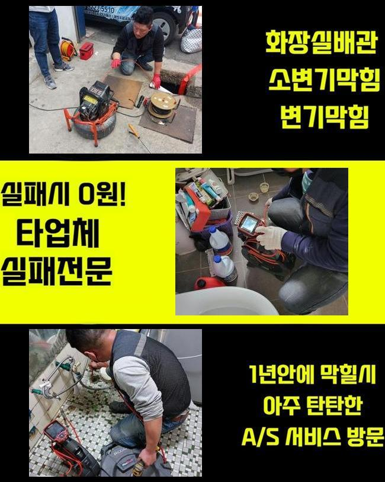
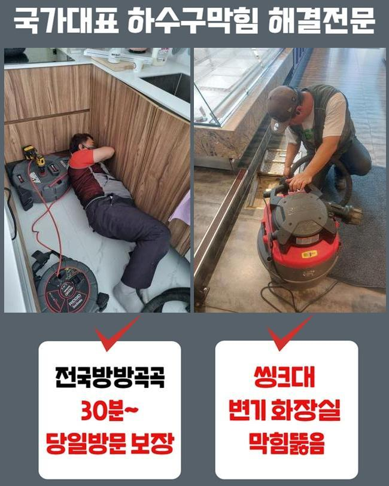
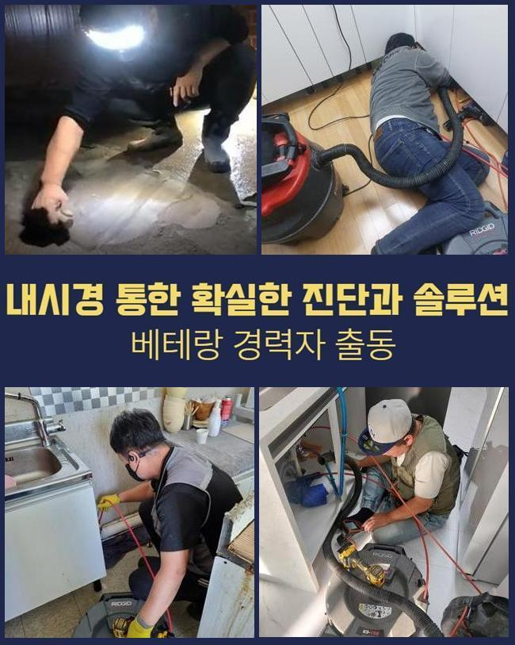
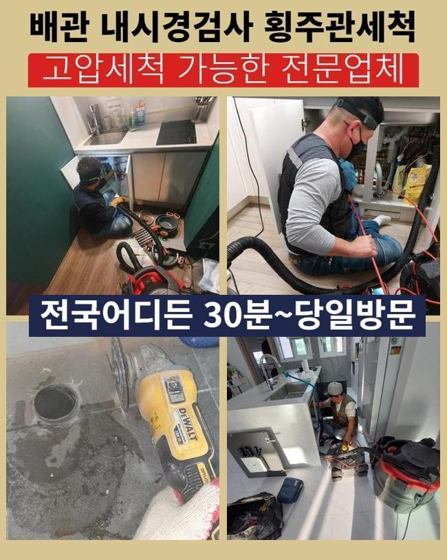
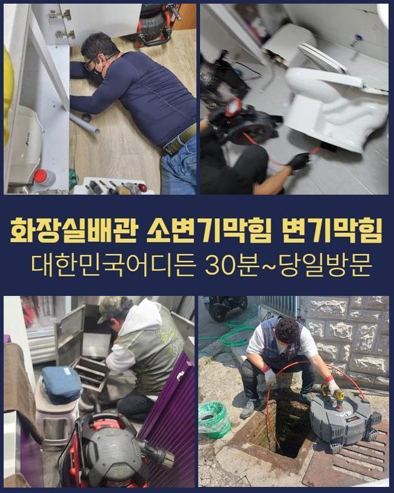
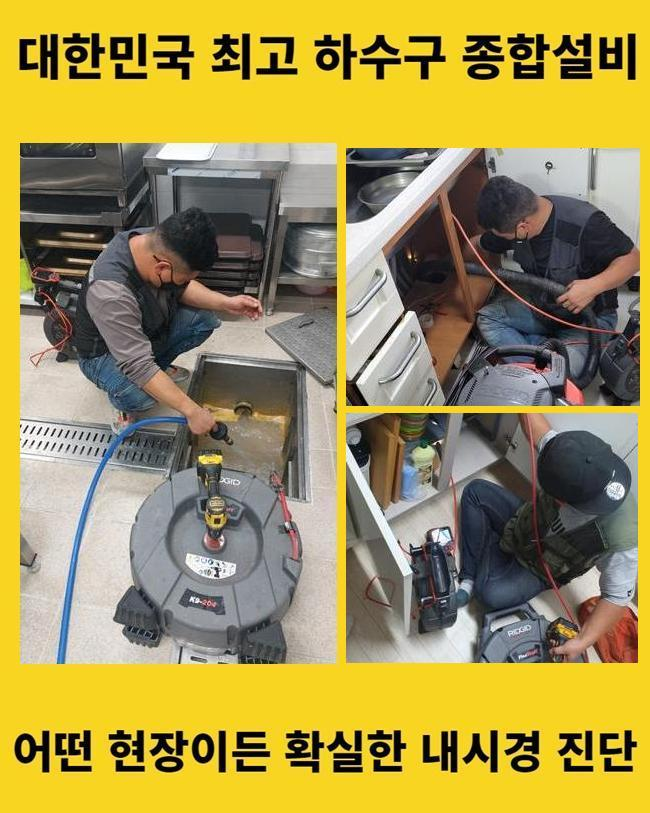
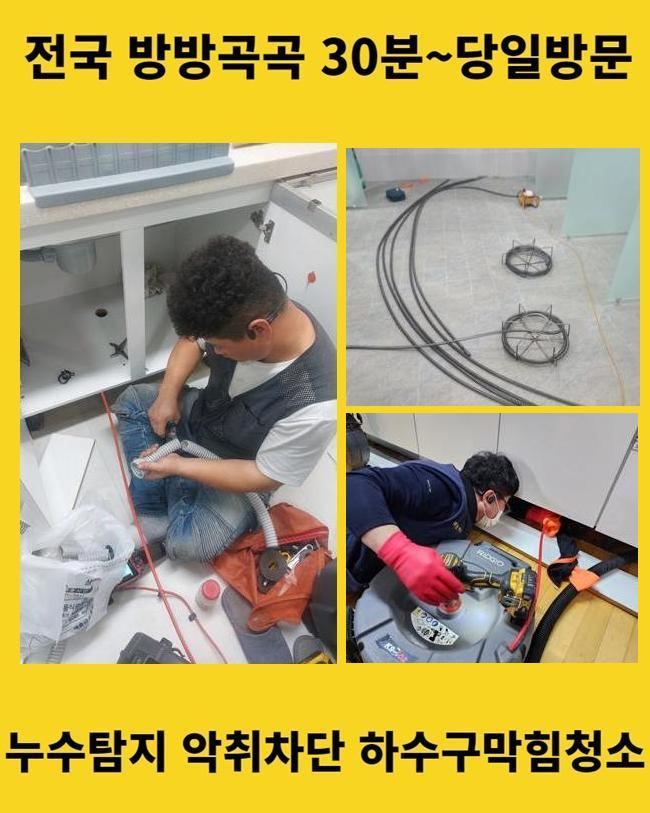

🏠 안성 영동욕실바닥막힘 고삼면 배관내시경카메라 배관설비공사
안성 배관막힘 전문 시공 후기

📋 작업 개요
- 위치: 안성
- 서비스 유형: 배관막힘, 맨홀막힘, 누수수리, 역류해결, 뚫는업체, 배관청소, 고압세척, 설비공사
- 작업 일시: 2024. 11. 16. 0:51
- 업체명: 하수구수사대 (010-5615-2118)
🔍 문제 상황
안성 영동욕실바닥막힘 고삼면 배관내시경카메라 배관설비공사
하수관이 정체되는 까닭은 생각하시는 것보다 많아요
대체로 음식물찌꺼기가 누증되어서 사태를 키우지만 그외로도 타물질들이 혼합되어 배수문제를 야기하기도 하죠
개수대에 찌꺼기가 쌓인다면 즉각 제거하는게 저희가 지속해서 강조하는 부분이죠
그렇긴 하지만 그것을 늘 이행해나가기는 굉장히 힘들죠
그래서 기술자의 진단과 수선이 필요한 것입니다
공정에 불가결한 장비들을 이용해 본원적인 부분을 신중히 탐색해나갑니다
저희가 그저께 방문한 지점은 주방 개수대의 역류증상으로 생활상의 어려움에 처하신 경우였어요
동일한 사태가 여러차례 나타나서 이대로 두면 안되겠다는 생각에 의뢰를 주신 케이스였죠
고객께선 화학약품을 다량으로 배관에 흘려보내거나 네이버를 통해서 습득한 지식을 적용해보셨다고 말하셨어요
이런 노력에도 잠시동안 통수가 진행되었고 얼마후 막힘은 한층더 심화되었다고 말하셨어요
그랬기에 앞으로도 이렇게 임시적으로 대응하다간 해결이 난망할것이라 판단하였고 기술자의 점검을 받으시는 방향으로 결정내리셨다고 합니다
저흰 일단 의뢰인의 해당 생각에 대하여 바르게 판단내리신 부분이라 말씀해드렸습니다
일반인이 정리할수있는 부문은 상당히 제한적이고 시간의 흐름에따라서 사태가 나빠지기 때문이랍니다

🔎 원인 분석
💡 전문가 진단: 정밀 진단 장비를 사용하여 슬러지의 고착 여부를 판명하고 타격/세척 작업을 실시했습니다.
만약 그런 패턴을 계속 끌고가신다면 결국엔 아래층 거주자에게도 손실을 끼칠수 있죠
저흰 보유한 기구들을 이용하여 빠르게 트러블을 정리하였습니다
불빛을 키고 관로속을 들여다보니 추정한바와 같이 여러크기의 침전물이 누증돼 있었죠
이러한 양상이 결과론적으로 통수를 정지시킨 것이었죠
배관면에는 별다른 문제점이 표출되지 않았기에 적체된 슬러지들을 정리하면 끝나는 상황이었습니다
비포앤 애프터를 확인하시도록 내시경카메라를 통해서 찍은 영상들을 제시하면서 작업내용을 설명해드렸어요
관로를 틀어막던 오염물질들이 청결하게 청소되었다는 사실을 직관할수 있었답니다
저희측은 타전문가가 해결하지 못하였거나 지속해서 역류 등이 나타나는 곳도 거침없이 해결해드리고 있답니다
작업여건이 마땅치않다고 꺼려하는 상황은 발생하지않으니 믿고 맡기셔도 된답니다
공사를 마치는 도중에 동일한 지역에서 의뢰가 들어왔어요
의뢰인께선 맨홀에서 물넘침이 발생한것을 보시고 곧장 의뢰하셨다고 합니다
올해 초에 수리기사가 내방하여 막힘해결을 하고 갔지만 몇달도 안되어서 재발한 경우였어요
그업체에 전화해보았으나 출장을 미루는듯한 느낌이들어 금번에는 포털사이트를 통해 검색해보시고 알아본뒤 저희 측에 연락하셨다고 해요
가급적 빨리 고치기를 원하셔서 검사후에 즉각 공정을 이행했습니다

🔧 작업 과정
근본적 막힘이유를 간파한뒤 적합한 방책을 찾아내려 1차로 내시경cctv를 투입하여 관찰했습니다
업무차량에 매일 구비된 고압물세척 기기를 통해서 고착화된 슬러지를 세정하기로 계획했죠
100파이가 조금넘는 중앙배수관은 가정배관을 청소할때처럼 전동청소기로는 개운하게 개방되기 어려워서 재발가능성이 높아요
이러한 상황에서는 여러 변수를 종합해서 고려해보아야 합니다
간단한 수단으로 누수증상이나 배관막힘에 다가선다면 트러블의 핵심사항을 알아내기 힘들며 실패할 가능성이 커집니다
이현장에선 파이프내측을 고압물세척으로 정리하고 노폐물들을 샅샅이 없애는 방안을 적용하는게 유익하겠다고 판단내렸습니다
관로전체 영역을 단박에 세척하였기 때문에 많은양의 찌꺼기가 방출되었는데요
그것에 이어서 적절하게 물흐름이 형성되었는지도 꼼꼼히 체크하였습니다
그후 거듭하여 내시경카메라를 넣어 관찰해보았는데요
새배관으로 갈아 끼운것같은 모습으로 바뀌어버린 파이프안을 확인할수가 있었답니다
말끔하게 청소가 실행되었기에 당분간은 역류나 막힘이 생겨날 가망은 낮았습니다
하지만 고객께서 물티슈나 단단한 물질들을 무차별적으로 배관으로 흘려버린다면 갑작스레 역류증세가 발생할수 있단 사실을 안내드렸습니다
배관을 뚫을때 가장 중요시여겨야할 내용은 막힘의 요소를 정밀하게 파악해내는 거에요
그리고 복합하여 살피는것도 필요하죠
역류로 인해 내방하였으나 시설물 훼손이 발견되기도 하며 중앙배관에 트러블이 생겨난걸 찾아내는 상황도 많기 때문이죠
이러한 현상을 발견했다면 즉각 처리하여 추가적 문제들을 예방하여야 마땅합니다
식당이 모여있는 상가는 많은 사람이 드나들기에 예기치않은 문제들이 나올 여지가 크죠
주기적인 관리나 체계적인 관리시스템을 적용하여 시설물관리를 하지않으면 점차 관로막힘이 나올수 있답니다
그렇기 때문에 저희들은 고객님들을 마주하면 적합한 관리방안과 정기서비스 내용도 알려드립니다
현장의 상황이 어찌되었든간에 늘 내시경기기를 꺼내면서 시작하는데요
배관내부의 사태를 한층더 확실하게 조사할수있고 그것으로 인하여 검사시간을 줄여나갈수 있죠
보는바와 같이 첨단 기계를 사용하여 수선을 시행하기에 현장상황에 대응하는 작업자는 시공경험이 충분한 1명만으로도 충분할때도 많아요


✅ 작업 완료
맨홀쪽에서 누설이 나타난다면 다른쪽으로 고장이 전이되는 사고가 나타날수가 있는데요
문제가 벌어진것을 인지하셨을때 연락주신다면 더욱 효율적인 대응이 이루어집니다
수회 고압물세정을 실행하고 파이프가 청결해졌다는걸 내시경카메라로 관측한다음에 정리해드리죠
욕실에서의 배수기능이 힘겹게 이루어진다면 유선전화면담을 우선해서하여 받아보십시오
출장전에 고객님의 상황에대해 말씀을 전해들은뒤에 실시할 시공내용과 수리비용을 말씀해드리겠습니다
물막힘현상으로 인해 고민이시라면 저희팀을 찾아주시길 바라요




⚠️ 베란다 누수 및 방수 관리 방법
- ✅ 비가 많이 올 때 창틀 주변이나 아래층 천장에 얼룩이 생기는지 정기적으로 확인해 보세요.
- ✅ 우수관 주변 실리콘 마감이 들뜨거나 깨진 틈새가 있는지 손상 여부를 수시로 체크하세요.
- ✅ 베란다 바닥 타일의 줄눈(메지)이 소실되면 그 틈으로 물이 침투하여 누수가 유발됩니다.
- ✅ 누수 의심 증상 발견 시 방치하면 아래층 손실이 커지므로 즉시 전문가의 진단을 받으십시오.
💡 핵심 정리
- 확실한 장비 작업(내시경 점검 및 샤프트 스케일링)으로 원인을 뿌리 뽑습니다.
- 작업 후 1년 이내에 동일한 부위 재발 시 100% 무상 A/S 서비스를 보장합니다.
- 서울 · 경기 · 인천 전 지역에 24시간 언제든 긴급 출동할 수 있도록 항시 대기 중입니다.
❓ 자주 묻는 질문 (FAQ)
🚨 안성 배관막힘 문제로 고민이신가요?
정확한 원인 진단과 확실한 시공으로 재발 없는 해결을 약속드립니다.
24시간 긴급 출동 | 서울 · 경기 · 인천 전지역 | 1년 내 재발 시 무상 A/S